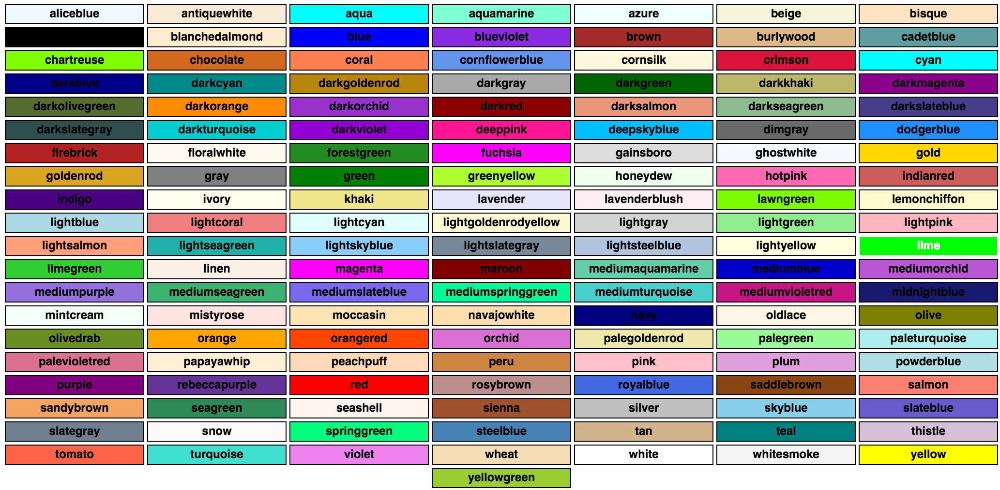
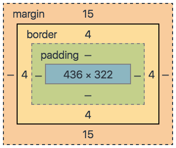

Hack Your Career
 Hack.your.Career
Hack.your.Career


Andżej
&
Web Development
Who is Andżej?
Definicja: osoba, ex-górnik, emeryt, beer-lover

Tools
Czy istnieje prawdziwe IDE do JavaScriptu?
Atom

Visual Code Studio

To które powinienem wybrać?
OK, edytor mamy, co jeszcze?
Narzędzie do kolaboracji
SourceTree

Na koniec terminal
Black Screen

Dżesika & Website WireFrame

HTML
HTML - a co to takiego?
- Hypertext Markup Language - czyli hipertekstowy język znaczników
- Dokument używany do wyświetlania zawartości na stronach WWW
HTML - dlaczego warto?
- Prosty i użyteczny język przydatny w tworzeniu stron WWW.
- Bardzo łatwy do nauczenia i ogarnięcia.
- Podstawa w tworzeniu bardziej zaawansowanych aplikacji.
Struktura dokumentu HTML
<!doctype html>
<html>
<head>
<meta charset="utf-8">
<title>BeerMajster</title>
<link rel="stylesheet" href="css/styles.css">
</head>
<body>
<!-- Komentarz ignorowany przez przeglądarki -->
<header></header>
<main></main>
<footer></footer>
</body>
</html>
Semantyka
- Semantyka w HTML'u polega na nadawaniu treści odpowiedniego znaczenia i struktury poprzez używanie odpowiednich tagów.
- Semantyczny HTML ułatwia pracę z kodem i maintenance.
- Kod HTML'owy powinien zawierać jedynie informacje odnośnie treści, a nie wyglądu.
Best practices
-
Zawsze deklaruj DOCTYPE.
<!doctype html> - Pisz kod semantyczny i zgodny ze specyfikacją W3C.
- Do stylowania wyglądu używaj wyłącznie CSS'a.
- Tabel używaj jedynie do przedstawiania danych tabelarycznych.
- Testuj wygląd strony w różnych przeglądarkach.
Andżej & HTML
Resources
- Learn to Code HTML & CSS (by Shay Howe)
- Learn HTML & CSS: Part I (CodeAcademy)
- Field Guide to Web Applications
- HTML5 Element Index
Dżesika & Design

Cascading Style Sheets
(CSS)
No właśnie,
co to takiego CSS?
- język służący do formatowania wyglądu elementów HTML, które tworzą wygląd strony internetowej
- skrót CSS oznacza "Kaskadowy Arkusz Stylów"
- jest to plik z rozszerzeniem ".css, w którym znajdują się pewne reguły CSS
- został stworzony w celu odseparowania struktury dokumentu od formy jego prezentacji
- separacja
- zwiększa zakres dostępności witryny,
- zmniejsza zawiłość dokumentu,
- ułatwia wprowadzanie zmian w strukturze dokumentu
CSS selektory
/* class */
.tower-of-pisa {
font-style: italic;
}

/* ID */
#ninja {
visibility: hidden;
color: black;
}

CSS selektory
/* element */
body {
height: 100%;
display: flex;
}

/* combining selectors */
#europe .country div {
border: none;
}
/* layering selectors */
.ikea .section .furniture {
display: table;
}

Pseudo selektory
/* mouse over link */
a:hover {
color: #FF00FF;
}
/* selected link */
a:active {
color: #0000FF;
}
/* focused element */
button:focus {
border: 1px solid #FF0000;
}
Najczęściej spotykane właściwości CSS
- jednostki
- kolory
CSS jednostki
- Many CSS properties take "length" values, such as width, margin, padding, font-size, border-width, etc.
- Length is a number followed by a length unit, such as 10px, 2em, etc.
Jednostki absolutne
- fixed - length expressed in any of these will appear as exactly that size
- not recommended for use on screen, because screen sizes vary so much
- px, cm, mm, in, pt, pc
Jednostki relatywne
- specify a length relative to another length property
- scales better between different rendering mediums
- %, em, ex, ch, rem, vm/vh, vmin/vmax
CSS kolory
- kolory w CSS można określić za pomocą następujących metod:
/* Hexadecimal colors */
#chucknorris { color: #BADA55; }
/* RGB colors */
#p1 {background-color: rgb(255, 0, 0);}
/* RGBA colors with opacity */
#p1 {background-color: rgba(255, 0, 0, 0.3);}
/* HSL colors */
#p1 {background-color: hsl(120, 100%, 50%);}
/* HSLA colors with opacity */
#p1 {background-color: hsla(120, 100%, 50%, 0.3);}
Predefiniowane nazwy kolorów
CSS Box model
Wprowadzenie do Preprocesorów CSS
- LESS oraz SASS (a także kilka innych) to tak zwane "preprocesory CSS"
- narzędzia, które pozwalają nam pisać kod CSS
- dzięki ich dobroci oferuje nieznane nam dotąd możliwości
- jeśli potrafisz pisać poprawny kod CSS, to również potrafisz napisać poprawny kod używając preprocesora
LESS / SASS
- mówiąc „piszę w SASS czy LESS” mówimy „piszę kod CSS”
- cała składnia CSS jest interpretowana jako poprawny kod przez preprocesory
- oprócz tego możemy posłużyć się wieloma dodatkowymi poleceniami, które już w „czystym” CSS nie były by poprawne
Jak zatem działają preprocesory CSS?
- Bardzo prosto!
- Najpierw tworzymy nowy plik z odpowiednim rozszerzeniem (np. .scss, .less)
- następnie piszemy w nim kod CSS, używając dodatkowych możliwości oferowanych przez wybraną implementację
- oprócz tego możemy posłużyć się wieloma dodatkowymi poleceniami, które już w „czystym” CSS nie były by poprawne
Linki do materiałów
- do pokodzenia: Code Pen
- do obejrzenia: CSS Tricks
- do poczytania: Kurs CSS
- online reference:
- W3Schools CSS
- SASS
- LESS
JavaScript
JavaScript - co to?
- najpopularniejszy (?) język programowania
- JavaScript !== Java
- obiektowy (bez klas!)
- wszechstronny
- interpretowany
- dynamicznie typowany
- główne zastosowanie - przeglądarki internetowe
JavaScript - po co?
- HTML - struktura i zawartość
- CSS - wygląd
- JS - interakcja!
Interakcje?
- walidacja formularzy
- event handling
- request --> response vs AJAX
JavaScript - zalety używania
- odciążenie serwera
- szybkość
- lepszy User eXperience
przykłady
Co dalej? Materiały
- do poczytania: Programowanie w JavaScript. Rusz głową! (Head First)
- do pokodzenia: Codecademy - JavaScript online course
- do obejrzenia: LevelUpTuts - JavaScript tutorial
- online reference: Mozilla Developer Network
Node
Q & A


 Hack.your.Career
Hack.your.Career